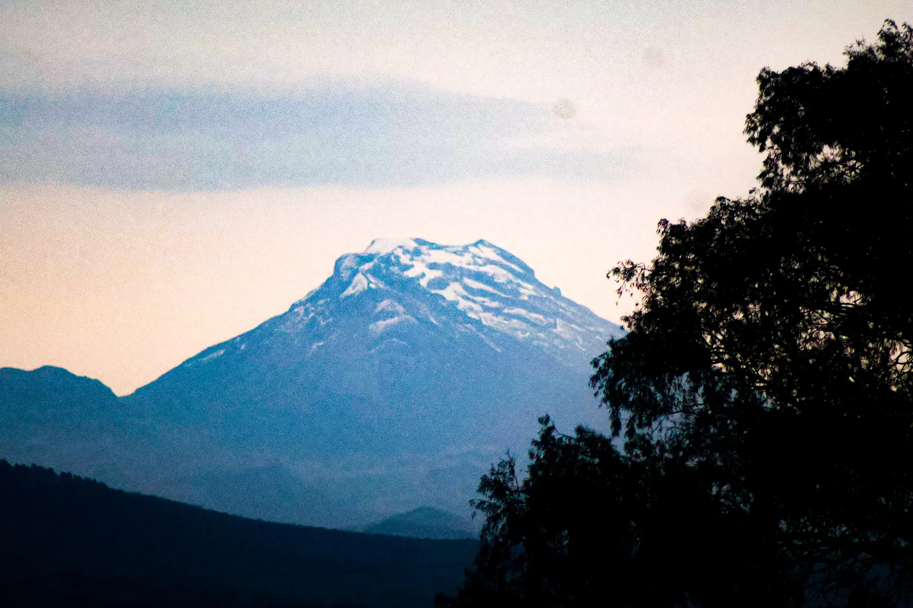

Fotografía · Cuaderno personal
Donde
he estado.
Me gusta fotografiar lo que me encuentro cuando viajo — paisajes, animales, calles, lo que sea que me haga detenerme — y también lo que se ve de noche, con un telescopio. La idea es seguir viajando y seguir documentándolo.
Ver la galería ↓01
Sobre estas fotos
No hay un plan detrás de esta selección. Son las cosas que me hicieron detenerme en el camino: un volcán que aparece entre los árboles, un cangrejo naranja sobre la roca, un letrero de neón a las once de la noche. Las del cielo son otra historia — ésas piden paciencia, un telescopio y horas de exposición para que aparezca algo que a simple vista no está.
02 · Galería
Lo que llevo hasta ahora
03 · Sobre mí
Desarrollador de software.
La foto es afición.
Soy ingeniero de software. La fotografía la llevo por gusto, sin pretensiones: me gusta la naturaleza, salir a caminar y traerme algo de vuelta. Casi todo lo que hay aquí salió de viajes o de fines de semana en el campo.
La astrofotografía vino después, con un telescopio pequeño. Apuntar al mismo punto del cielo durante dos horas para que aparezca una nebulosa resultó ser bastante parecido a programar: mucho de preparar, esperar y ajustar.
Este sitio está hecho con HTML, CSS y JavaScript, con GSAP y ScrollTrigger para las animaciones y Lenis para el scroll. Las imágenes las procesa un script propio en Python (Pillow), que las convierte a WebP en dos tamaños.
04 · Contacto
¿Trabajamos juntos?
Estoy abierto a proyectos de desarrollo de software y de páginas web como ésta. Aquí me encuentras: